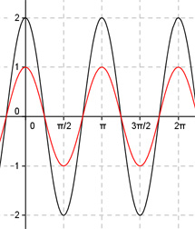

Aufgabe 265 Bestimmen Sie a und b für den dargestellten Graphen der Form y = a * cos b * (x + c) + d.  Abgelesen: Periode = п --> 2п |b| = ---- = 2 oder -2 wegen cos(x) = cos(-x) п acos(2(x + c)) + d oder acos(-2(x + c)) + d Keine Verschiebung entlang der y-Achse --> d = 0 acos(2(x + c)) oder acos(-2(x + c)) Abgelesen: Keine Verschiebung entlang der x-Achse --> c = 0 acos(2x) oder acos(-2x) Abgelesen: |a| = 2 Keine Spiegelung an der x-Achse --> a = 2 --> y = 2cos(2x) oder y = 2cos(-2x) Zum Vergleich: cos(2x)